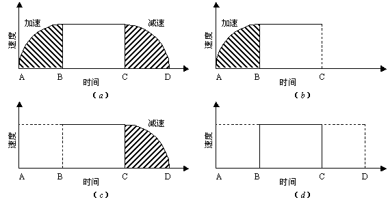
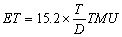

1 . 教学安排
2 . 预定时间标准的定义、特点及用途
3 . 方法时间衡量
 方法时间衡量的定义
方法时间衡量的定义
方法时间衡量的方法及步骤
方法时间衡量法应用举例
4 . 模特法及其应用实例
5 . 思考与练习题
 返回课程学习首页
返回课程学习首页
方法时间衡量的方法及步骤
(一)方法时间衡量法的时间值
MTM动作的时间单位称为TMU(Time Measurement Unit)，其与普通时间单位的换算关系如下：
1TMU=0.0000lh=0.0006min=0.036s
1s=27.8TMU
1min=1667TMU
1h=100000TMU
例如伸右手抓取桌上距右手
因为时间衡量法的时间值，是在详细分析动作记录的基础上设定的，所以不包含宽裕时间，而是指具有中等水平的作业者在通常状态下以一般的努力程度进行操作所需要的时间值。
(二)方法时间衡量法的基本动作
采用方法时间衡量法确定作业时间，要根据作业来决定基本动作，然后测定基本动作的大小(如距离等)，最后识别动作的基本性质。
作业基本动作的分类如表11-2所示。
表11-2 方法时间衡量法的基本动作要素
|
基本要素名称 |
符号 |
说明 |
|
伸手 |
R |
把手或指移动到目标场所或区域 |
|
运送 |
M |
把物运到目标场所或区域的动作 |
|
旋转 |
T |
以前臂中心线为轴，旋转手腕及前臂的动作 |
|
压 |
AP |
加力的动作 |
|
抓 |
G |
手或指控制目标物体的动作 |
|
定置 |
P |
把两个目标物体合在一起的动作 |
|
放 |
RL |
停止手或指的控制动作 |
|
拉开 |
D |
用力拉开两个合在一起的物体的动作 |
|
移动眼睛 |
ET |
把眼睛的视线从一处移到另一处的动作 |
|
注目 |
EF |
把眼睛的视线集中在一个物体上的动作 |
1．伸手(Reach，简记R)
定义：伸手——手向目的物移动的基本动作。
相关的变动因素：伸手动作的时间值随着手或手指移动的距离、伸手动作的类型和伸手动作的状态而变化。
(1)手或手指移动距离的测定方法。当手(或手指)移动的轨迹不是直线时，要用卷尺等量具沿移动轨迹把实际移动的距离准确测出。一般在移动手腕时，以人的食指根部从移动前的位置到终点的距离作为计量基准是比较方便的。例如投掷石子，开始时手的形态是手腕弯曲，而投掷终了的瞬间手腕伸直，在测量移动距离时，则应把手腕弯成与开始投掷的状态相同，这样测量的距离才准确。
像这种在主要动作中有辅助动作的场合，规定手的状态在始点和终点必须是一致的，也就是说要考虑辅助动作，加以修正。
(2)伸手动作的类型。伸手动作有A、B、C、D、E 5种，而时间值有4种(C和D规定为同一时间值)。
A类：完全不需要用眼睛确定对象物的位置和伸手方向，而是习惯性地移动手的位置；或者说是向固定位置或另一只手上的对象物伸手的动作。
B类：是在一般的作业中发生最多的伸手动作，例如伸手取桌子上的零件或工具、伸手向办公桌上取橡皮等。由于每次都稍稍变换位置，所以必须用眼睛观察并及时调整手的移动方向和位置；或者说是伸手B是向无固定位置的对象物伸手的动作。
C类：是向堆放成杂乱无章的对象物伸手的动作，如向很乱的零件箱中伸手的动作等，此时需要寻找、选择。因此，这是最需要时间的动作，这类动作如若反复进行，必须加以改善。
D类：是向危险、易碎、或微小(断面直径在
E类：是向身体的自然位置伸手，也就是放下手的动作。因为这类动作对整体作业时间没有影响，所以一般可以忽略。
(3)伸手动作的状态有3种，如图11-1所示，分为I型、Ⅱ型和Ⅲ型。

图11-1 伸手动作的状态
（a）状态Ⅰ （b）、（c）状态Ⅱ （d）状态Ⅲ
状态I是最一般的伸手动作，开始和终止均为静止状态，所以从伸手到终止的速度按加速——等速——减速的过程变化，如图11-1（a）。表11-3中的时间值，就是这种状态下的时间值。
状态Ⅱ是指始点和终点速度不变的状态，如图11-1（b）和（c）。如伸手取零件的途中，把装配好的成品放入成品盘中，放成品的瞬间(起始点)若速度不减，而且仍以原有速度伸手取下一个零件，此时的速度时间曲线如图11-1（c）所示。显而易见，与状态Ⅰ相比，状态Ⅱ的操作时间可以缩短，所以在生产中，如有可能，应尽量把伸手动作从动作状态Ⅰ改为状态Ⅱ。
状态Ⅲ是指在伸手动作中速度不变，例如把烘干的细长物连续从炉中向上提取的动作。该状态的伸手动作的时间值最短，应成为改善伸手动作的目标。
例如：向电话机伸手
例如：向桌子上的铅笔伸手
如果开始为移动状态，符号前面加m，当伸手距离小于
状态Ⅰ、Ⅱ的时间值可以从表11-3中查出，而状态Ⅲ是通过计算求时间值。
表11-3伸手R
|
距离/cm |
时间值(TMU) |
手移动时(m) |
情况说明 |
||||
|
A |
B |
C、D |
E |
A |
B |
||
|
2以下 4 6 8 10 |
2.0 3.4 4.5 5.5 6.1 |
2.0 3.4 4.5 5.5 6.3 |
2.0 5.1 6.5 7.5 8.4 |
2.0 3.2 4.4 5.5 6.8 |
1.6 3.0 3.9 4.6 4.9 |
1.6 2.4 3.1 3.7 4.3 |
A把手伸到指定的位置； 把手伸到另一只手中的目的物； 把手伸向另一只手中的目的物 |
|
12 14 16 18 20 |
6.4 6.8 7.1 7.5 7.8 |
7.4 8.2 8.8 9.4 10.0 |
9.1 9.7 10.3 10.8 11.4 |
7.3 7.8 8.2 8.7 9.2 |
5.2 5.5 5.8 6.1 6.5 |
4.8 5.4 5.9 6.5 7.1 |
B把手伸向每重复操作一次位置 移动变化的目的物 |
|
22 24 26 28 30 |
8.1 8.5 8.8 9.2 9.5 |
10.5 11.1 11.7 12.2 12.8 |
11.9 12.5 13.0 13.6 14.1 |
9.7 10.2 10.7 11.2 11.7 |
6.8 7.1 7.4 7.7 8.0 |
7.7 8.2 8.8 9.4 9.9 |
C把手伸向杂乱放置着的目的物 |
|
35 40 45 50 55 60 |
10.4 11.3 12.1 13.0 13.9 14.7 |
14.2 15.6 17.0 18.4 19.8 21.2 |
15.5 16.8 18.2 19.6 20.9 22.3 |
12.9 14.1 15.3 16.5 17.8 19.0 |
8.8 9.6 10.4 11.2 12.0 12.8 |
11.4 12.8 14.2 15.7 17.1 18.5 |
D把手伸向非常小，又需要牢固 夹紧的目的物 |
|
65 70 75 80 |
15.6 16.5 17.3 18.2 |
22.6 24.1 25.5 26.9 |
23.6 25.0 26.4 27.7 |
20.2 21.4 22.6 23.9 |
13.5 14.3 15.1 15.9 |
19.9 21.8 22.4 24.2 |
E把手放回自然位置或放到下个动 作要移动的位置上；或为了移到 侧面，把手伸到大概位置上 |
伸手动作的时间值TMU计算：
状态I、状态Ⅱ由查表得到，状态Ⅲ的时间值等于状态Ⅰ的时间值减去状态Ⅰ和状态Ⅱ时间值之差的2倍，即TMUⅢ= TMUⅠ - （ TMUⅠ - TMUⅡ）×2
例如：某作业人员装好一个小产品后，伸手取零件准备装配下一个产品，在伸手取零件途中顺便将手中产品丢在成品盘中。这样从成品放手到取零件的移动距离是
因为伸手开始时是移动状态，所以符号为：mR20B
含义：m为移动中的手；R为基本动作种类，是
从表11-3中可以查出，mR20B是表示状态Ⅱ，其时间值为7.1TMU。
2．移动(Move简记M)
定义：移动——为某种预定的目的移动某物至一特定的地点。
相关因素与计算TMU：
(1)发生移动动作时手或手指的移动距离与发生伸手动作时手或手指的移动距离的测量方法相同。
(2)移动的种类有3种：
A类：是把对象物运送到另一只手中，或到另一只手处停止；或借助于“机械的向导”运动(如拧螺钉、打开台页等)，完全不需要控制的动作。
B类：是把对象物送到某一大概位置。
C类：是把对象物送到精确位置，这一类移动动作之后，多接定置动作。
(3)移动状态和伸手状态相同。如状态B的移动符号表示为：Mm—B或M—Bm，其中“—”表示移动距离。
例如：将钢笔插入笔套中，运动距离是
例如：把钢笔放在桌上，移动距离若为
例如：将笔从左手移动到右手，移动距离
当移动重量或阻力在
例如：单手从货车上搬下
例如：双手从货车上搬下
移动动作的时间值TMU计算：
求移动时间值时，先从表11-4中查出有关数据，然后通过计算即可求得。
TMU值 = 时间值×重量修正系数 + 重量修正常数
此外，仔细分析表11-4，还会发现移动距离小于
表11-4移动
|
距离 /cm |
时间值(TMU) |
按重量修正 |
情况说明 |
||||||
|
A |
B |
C |
移动中的手B/m |
重量/kg |
系数 |
常数 (TMU) |
A目的物送到另一只手 中或到一只手处停止 B把目的物送到适当位置 C把目的物送到正确位置 |
||
|
2以下 4 6 8 10 |
2.0 3.1 4.1 5.1 6.0 |
2.0 4.0 5.0 5.9 6.8 |
2.0 4.5 5.8 6.9 7.9 |
1.7 2.8 3.1 3.7 4.3 |
1 |
1.00 |
0.0 |
||
|
2 |
1.04 |
1.6 |
|||||||
|
4 |
1.07 |
2.8 |
|||||||
|
12 14 16 18 20 |
6.9 7.7 8.3 9.0 9.6 |
7.7 8.5 9.2 9.8 10.5 |
8.8 9.8 10.5 11.1 11.7 |
4.9 5.4 6.0 6.5 7.1 |
|||||
|
6 |
1.12 |
4.3 |
|||||||
|
8 |
1.17 |
5.8 |
|||||||
|
22 24 26 28 |
10.2 10.8 11.5 12.1 |
11.2 11.8 12.3 12.8 |
12.4 13.0 13.7 14.4 |
7.6 8.2 8.7 9.3 |
|||||
|
10 |
1.22 |
7.3 |
|||||||
|
12 |
1.27 |
8.8 |
|||||||
|
35 40 45 50 |
14.3 15.8 14.7 19.0 |
14.5 15.6 16.8 18.0 |
16.8 18.5 20.1 21.8 |
11.2 12.6 14.0 15.4 |
|||||
|
14 |
1.32 |
10.4 |
|||||||
|
16 |
1.36 |
11.9 |
|||||||
|
55 60 65 70 75 80 |
20.5 22.1 23.6 25.2 26.7 28.3 |
19.2 20.4 21.6 22.8 24.0 25.2 |
23.5 25.2 26.9 28.6 30.3 32.0 |
16.8 18.2 19.5 20.9 22.3 23.7 |
|||||
|
18 |
1.41 |
13.4 |
|||||||
|
20 |
1.46 |
14.9 |
|||||||
|
22 |
1.51 |
16.4 |
|||||||
3．旋摆(Cranking简记C)
定义：旋摆——是指为了使对象物做圆周运动，操作者所作的以肘为轴心的摆动动作。
相关因素：
(1)旋摆运动直径，是指手或手指抓住部位的回旋直径。如果做椭圆运动，规定按平均直径计算。
(2)运动时的抗力或重量，和移动动作一样，在lkg以下不予考虑。
(3)运动类型，有连续和断续两种。
连续旋摆运动的时间值计算公式：TMU值=[（N T + 5.2）×R ] + K式中，N：回旋次数；T：根据直径确定的时间值，见表11-5；R：阻力系数(与移动动作相同)；K：阻力常数(与移动动作相同)。
断续旋摆运动的时间值计算公式：TMU值=[（T + 5.2）×R + K ] ×N
例如：操作机床手轮的动作，旋摆直径为
从表11-5中查出时间值T=13.6TMU，从表11-4中查出重量修正系数R=1.17，常数K=5.8，所以
表11-5 旋摆C
|
直径/cm |
时间值(TMU) |
直径/cm |
时间值(TMU) |
直径/cm |
时间值(TMU) |
|
4 6 8 10 12 14 |
9.2 10.0 10.7 11.3 11.9 12.4 |
16 18 20 22 24 26 |
12.8 13.2 13.6 13.9 14.2 14.5 |
28 30 35 40 45 50 |
14.8 15.0 15.5 15.9 16.3 16.7 |
4．旋转(Turn简记T)
定义：旋转——以前臂长度方向的中心线为轴心的手或手指的旋转运动。
相关因素：
(1)旋转角度。测量拇指、食指、小指的第一关节所得的角度。
(2)重量或阻力。重量和阻力可用弹簧秤衡量，分为三级：0~
例如：把门敞开120°，要克服
旋转动作的时间值TMU由查表得到，见表11-6。
表11-6 旋转T
|
重量/kg |
对应于旋转角度的时间值(TMU) |
||||||||||
|
30° |
45° |
60° |
75° |
90° |
105° |
120° |
135° |
150° |
165° |
180° |
|
|
S：0～1 |
2.8 |
3.5 |
4.1 |
4.8 |
5.4 |
6.1 |
6.8 |
7.4 |
8.1 |
8.7 |
9.4 |
|
M：1.1～5 |
4.4 |
5.5 |
6.5 |
7.5 |
8.5 |
9.6 |
11 |
12 |
13 |
14 |
14.8 |
|
L：5.1～16 |
8.4 |
11 |
12 |
14 |
16 |
18 |
20 |
22 |
24 |
26 |
28.2 |
5．加压(Apply Pressure简记AP)
定义：加压——是指克服阻力所附加的力。
相关因素： 加压动作类型。
加压动作可分为两类：
类型Ⅰ：是指为了强压而在实际加压之前，身体部位需要稍加预备调整(可看作 “中断”或“踌躇”)，因此，时间值较大，其符号为AP1。
类型Ⅱ：与类型Ⅰ不同之处是轻微加压，因此身体部位不做准备调整，其符号为AP 2。
加压时间值：AP1，16.2TMU；AP2，10.6TMU。
6．抓取(Grasp简记G)
定义：抓取——为了预定的目的，用手指或手充分控制一物或多个物体，以便下一动作得以实现(注意，抓取是手的动作，不包括用手使用任何设备取物，如用钳取物等)。
相关因素：抓取的类型有五种：G1、G2、G3、G4、G5。
(1)G1由G
G
G1B：是指抓取小的对象物，例如抓取桌上的硬币、薄工具等物品。
G
(2)G2是指需要重抓才能控制目的物的动作。
(3)G3是指以一般的努力程度，以一只手将对象物转到另一只手的抓取。
(4)G4是R或C的继续动作，伴随有探索和考虑，也可理解为从零乱的同种或不同种对象物中抓取的动作，如从盛放多种零件的容器内抓取某零件的动作。以对象物的大小分为三级：即G
(5)G5是指包括“接触”、“滑动”、“钩着抓”的抓取。该动作时间值为零。
抓取动作的时间值TMU由查表得到，见表11-7。
表11-7抓取G
|
情况 |
时间值(TMU) |
说 明 |
|
G |
2.0 |
直接抓小、中或大的目的物，容易抓时 |
|
G1B |
3.5 |
抓极小的目的物或紧紧贴在平面上放置的物体时 |
|
G1Cl |
7.3 |
抓圆柱形目的物(底部或单侧有障碍物)时，直径 |
|
G |
8.7 |
抓圆筒形目的物(底部或单侧有障碍物)时，直径6~ |
|
G |
10.8 |
抓圆筒形目的物(底部或单侧有障碍物)时，直径 |
|
G2 |
5.6 |
矫正抓法 |
|
G3 |
5.6 |
换到另一只去拿着 |
|
G |
7.3 |
抓杂乱放着的目的物(需寻找或选择)，大于26×26× |
|
G4B |
9.1 |
抓杂乱放着的目的物(需寻找或选择)，小于26×26× |
|
G |
12.9 |
抓杂乱放着的目的物(需寻找或选择)，小于 |
|
G5 |
0 |
接触，挂上 |
7．定置(Position简记P)
定义：定置——也称定位或对准，即将一物与另一物对准。
相关因素：定置动作包含插入深度在
(1)配合的松紧程度分为3级：1级(P1)，是指配合程度很松，不需要加力，依靠物体重量自行套入；2级(P2)，是指配合程度稍紧，稍稍加力就可将对象物套入；3级(P3)，是指配合程度紧密，需要较大的力才能将对象物压入。
判断松紧程度的标准：套入物体时几乎感觉不到用力者P1，用力明显时用P3，介于两者之间为P2。
(2)对称性是影响定置时间的重要因素。可以根据对象物以及结合后的轴线为中心，相对旋转一周的配合位置来判断对称性的类型。对称有以下三类：对称(S)，例如两个圆柱形物体任意位置均可配合；半对称性(SS)，如两个正方形物体的配合情况；非对称性(NS)，如两个梯形物体的配合，配合位置只有一个。
(3)操作的难易性分为操作容易和操作困难两种情况。操作容易(E)是指操作的物体坚固，配合程度松弛，不必有G2的动作。操作困难上指操作的物体柔软或细小，配合位置远且必有G2的动作。
例如：套钢笔套的动作，可记为P2SE。把线穿缝衣针眼中的动作，可记为P3SD。
定置动作的时间值TMU由查表得到，见表11-8。
表11-8 定置P
|
配合程度 |
对称性 |
容易处理(E)(TMU) |
难处理(D)(TMU) |
|
|
松的 |
不必压 |
对称(S) 半对称(SS) 非对称(NS) |
5.6 9.1 10.4 |
11.2 14.7 16.0 |
|
紧的 |
轻压 |
对称(S) 半对称(SS) 非对称(NS) |
16.2 19.7 21.0 |
21.8 25.3 26.6 |
|
极紧的 |
重压 |
对称(S) 半对称(SS) 非对称(NS) |
43.0 46.5 47.8 |
48.6 52.1 53.4 |
8．放手或释放(Release Load简记RL)
定义：放手——放下用手指或手控制的目的物。
相关因素：放手的类型、放手动作的时间值。
放手的类型有两种：RL1和RL2。
RL1：只是松开手指释放对象物的动作，手指移动的距离在2厘米以下，时间值2.0 TMU。
RL2：是与接触抓取(G5)相反的动作，松开用手或手指接触并控制的对象物，该动作时间值为0。
9．拉开或拆卸或拆开(Disengage简记D)
定义：拉开——将合成件分开。
相关因素：影响拉开的时间值的因素有配合程度和操作的难易程度。
(1)根据拉开时所需力的大小，配合程度可分为以下三种类型：类型Ⅰ(D1)，阻力小，反向作用不明显；类型Ⅱ(D2)，在10~
(2)操作的难易程度分为操作容易和操作困难两种：操作容易(E)，是指拿好对象物，只需少许控制力就能一下子拉开的操作；操作困难(D)是指需要有抓取(G2)动作的拉开操作，施加控制力比较困难。
例如：拉开钢笔套的动作，用符号D1E。
拉开动作的时间值TMU由查表得到，见表11-9。
表11-9 拉开D
|
配合的程度 |
操作容易(E) |
操作困难(D) |
|
1．松的：用极小的力，一直到下一个动作为止 |
4.0 |
5.7 |
|
2．紧的：用一般的力，稍有反作用力 |
7.5 |
11.8 |
|
3．极紧的：用很大的力，手上明显感到反作用力 |
22.9 |
34.7 |
10．眼睛移动时间(Eye Travel Time 简记ET)
定义：眼睛移动时间——视觉从一定点移到另一定点。
相关因素：视线移动距离T与眼睛对视线移动的轨迹的垂直距离D决定了视线从一点到另一点的时间值。
眼睛的正常视野范围为距离
眼睛的时间值有视线移动时间ET和眼睛的聚焦时间EF。

视线移动时间ET最高不得超过20TMU。
眼睛的聚焦时间是指眼睛不动，视线对准视觉点所需时间。EF=7.3TMU。
11．全身动作(Body Motion)
定义：全身动作——腿或身体的动作(手、臂、眼睛的动作除外)。
相关因素：全身动作包括以下几种类型：
(1)腿部动作(LM)，指移动脚时的腿部动作。
(2)脚部动作(FM)，指以踝为支点的脚部动作。
(3)横侧移步动作，有以下两类：SS-C1，向侧移一步即可着手工作；SS-C2，向侧移两步才能工作。
(4)转变身体方向(TB)，种类有TBC1与SS-C1基本相同；TBC2与SS-C2基本相同。
(5)弯腰与起身(B与AB)，指以腰部为支点向前弯腰，手的位置在膝盖之下的动作。
(6)屈膝与起身(S与AS)指弯曲膝盖使手在膝盖之下的动作。
(7)单膝跪地与起身(KOK与AKOK)，单膝跪地所需时间与B、S相同。
(8)双膝跪地与起身(KBK与AKBK)。
(9)坐下与站起(SIT与STD)。
(10)步行(W)，指两脚的交互移动，使身体前进或后退。
全身动作的时间值TMU由查表得到，见表11-10。
表11-10 身体、脚和腿的动作
|
说明 |
符号 |
距离 |
时间值(TMU) |
|
脚的动作(以脚腕为支点) |
FM |
到 |
8.5 |
|
脚的动作(用脚狠蹬的动作) |
FMP |
19.1 |
|
|
腿或下肢的动作 |
LM |
到 每增加 |
7.1 0.5 |
|
横侧移步，情况1：迈出的一只脚在接触地的同时，手也动作时 |
SS-C1 |
每增加 |
用R或M的时间 17.6 0.2 |
|
横侧移步，情况2：不把后脚拉到跟前，就不能使手工作时 |
SS-C2 |
每增加 |
34.1 0.4 |
|
弯腰、屈膝、单膝跪地 |
B，S，KOK |
29.0 |
|
|
起身 |
AB，AS，AKOK |
31.9 |
|
|
双膝跪地 |
KBK |
69.4 |
|
|
起身 |
AKBK |
76.7 |
|
|
坐下 |
SIT |
34.7 |
|
|
从坐着的姿势站起来 |
STD |
43.4 |
|
|
转体(45°~90°)情况1：迈出的脚支撑地面的同时能使手工作时 |
TBC1 |
18.6 |
|
|
转体(45°~90°)情况2：后脚不拉到跟前，就不能使手工作时 |
TBC2 |
37.2 |
|
|
步行 |
W-M |
|
17.4 |
|
步行 |
W-P |
1步左右 |
15.0 |
|
步行(有障碍) |
W-PO |
1步左右 |
17.0 |
12．动作的联合
定义：动作的联合——当两种或两种以上的动作同时在同一身体部位发生。
相关因素：仅用某一特定的身体部位进行作业是极不合理的，通常需要两个以上的身体部位才能有效地进行作业。
联合动作的状态可分为：连续动作、结合动作、同时动作和复合动作。
联合动作时间值TMU计算：
当两个以上动作同时进行时，用具有最大时间值的动作所需要的时间值作为联合动作的时间值。连续动作时，由于各动作一个接一个不间断的连续进行，而且各个动作独立存在，所以把从MTM数据表上查出的各动作的时间值相加，就是连续动作的时间值。
(三)方法时间衡量法的应用步骤
方法时间衡量法对尚未进行的作业和已经进行的作业均适用。具体操作步骤应为：
(1)明确作业方法。对现有作业进行分析时，要仔细观察，对其有充分了解。
(2)收集有关作业质量、作业顺序、作业内容和作业场所的资料。
(3)将作业分解成基本要素，并确认细分后的作业要素的正确顺序并加以记录。
(4) 计算时间值。